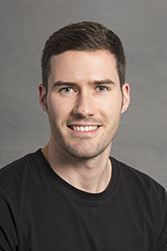

About Me
 (last update: February, 2015). (last update: February, 2015).
|
 |
Contact
The best and fastest way to contact me is by email:
f.lucka (at) ucl.ac.uk
My proper address is:
Felix Lucka
University College London
Dept. of Computer Science
Gower Street
London WC1E 6BT
United Kingdom
However, I strongly discourage you from contacting me in this way prior to writing an email...